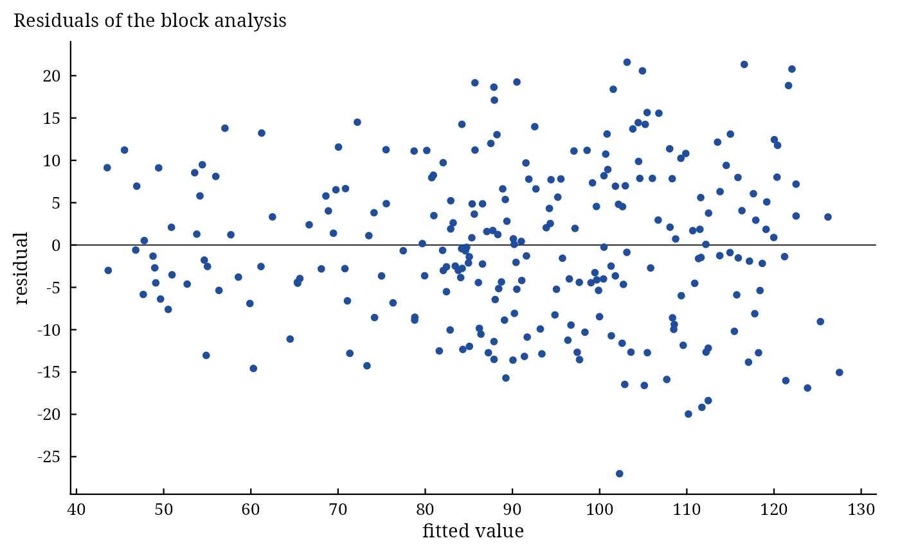

The results of Griffing, Hayman and PartialDiallel are lists with a
class, so the usual model functions of R work on them: print() shows the main tables, summary() adds
the tests of every effect, anova() returns the analysis of variance, coef() the estimates,
vcov() and confint() their covariance matrix and confidence intervals, fitted() and
residuals() the plot-level fitted values and residuals of the block analysis, predict() the
predicted means of crosses (Griffing's fixed model), and plot() or autoplot() the figures.
Usage
# S3 method for class 'summary.da_griffing'
print(x, digits = 4L, ...)
# S3 method for class 'summary.da_hayman'
print(x, digits = 4L, ...)
# S3 method for class 'summary.da_partial'
print(x, digits = 4L, ...)
# S3 method for class 'da_result'
anova(object, ...)
# S3 method for class 'da_griffing'
coef(object, ...)
# S3 method for class 'da_hayman'
coef(object, ...)
# S3 method for class 'da_partial'
coef(object, ...)
# S3 method for class 'da_griffing'
vcov(object, ...)
# S3 method for class 'da_partial'
vcov(object, ...)
# S3 method for class 'da_griffing'
confint(object, parm = NULL, level = 0.95, ...)
# S3 method for class 'da_partial'
confint(object, parm = NULL, level = 0.95, ...)
# S3 method for class 'da_result'
fitted(object, ...)
# S3 method for class 'da_result'
residuals(object, ...)
# S3 method for class 'da_result'
nobs(object, ...)
# S3 method for class 'da_result'
df.residual(object, ...)
# S3 method for class 'da_griffing'
predict(object, newdata = NULL, type = c("gca", "full"), ...)
# S3 method for class 'da_result'
autoplot(object, ...)Arguments
- x, object
a result of
Griffing(),Hayman()orPartialDiallel().- digits
significant digits of printed numbers (default 4).
- ...
passed on (to
plot()forautoplot(); otherwise not used).- parm
effects to include (names; default all).
- level
confidence level (default 0.95).
- newdata
data frame with columns
Cross1andCross2(parent labels); default every pair of parents.- type
"gca"(default) or"full"; see Details.
Value
print() returns x invisibly. summary(): an object of class
summary.da_griffing, summary.da_hayman or summary.da_partial (a list of tables, each a
data.table or data.frame) with a print method. anova(): the analysis of variance (class
anova). coef(): a named numeric vector (Griffing Model 1: gca effects g_<parent>, sca effects
s_<i>:<j>, reciprocal effects r_<i>:<j>; Griffing Model 2: variance components; Hayman: the
components of variation; partial diallel: gca effects gI_<parent>, gII_<parent>).
vcov(): covariance matrix of the gca effects. confint(): a matrix with columns for the lower and
upper limits. fitted(), residuals(): numeric vectors, one value per plot. nobs(): number of
plots; df.residual(): error degrees of freedom. predict(): a data.table with
Cross1, Cross2 and predicted. autoplot(): a ggplot object.
Details
Standard errors and tests use the error variance of a cell mean \(\sigma^2_m = MS_E/B\) on the error degrees of freedom \(f_E\): \(t = \hat{\theta}/\mathrm{SE}(\hat{\theta})\), two-sided p-values from the \(t\) distribution on \(f_E\) degrees of freedom, and
confidence intervals \(\hat{\theta} \pm t_{1-\alpha/2, f_E}\,\mathrm{SE}(\hat{\theta})\). In Griffing's fixed model the gca effects have \(\mathrm{Var}(\hat{g}_i) =
v_1\sigma^2_m\) and \(\mathrm{Cov}(\hat{g}_i, \hat{g}_j) = (v_1 - v_{12}/2)
\sigma^2_m\), where \(v_1\) and \(v_{12}\) are the variance
coefficients of \(\hat{g}_i\) and of \(\hat{g}_i - \hat{g}_j\) (see Griffing). In
the partial diallel \(\mathrm{Var}(\hat{g}^I_i) = (1 - 1/L)\sigma^2/(BM)\),
\(\mathrm{Var}(\hat{g}^{II}_j) = (1 - 1/M)\sigma^2/(BL)\) and
\(\mathrm{Var}(\hat{S}_{ij}) = (L-1)(M-1)\sigma^2/(BLM)\). Hayman's
components are tested on \(P-2\) degrees of freedom.
Summary. summary(object, top = 5) lists the top crosses with the largest sca effects
(Griffing's Model 1 and the partial diallel); top is passed through ....
Prediction (Griffing, Model 1): the mean of cross \(i \times j\) is predicted by \(\hat{\mu} +
\hat{g}_i + \hat{g}_j\) from general combining ability alone (type = "gca", the prediction
for crosses not grown or not yet tested) or by \(\hat{\mu} + \hat{g}_i + \hat{g}_j + \hat{S}_{ij} +
\hat{R}_{ij}\) (type = "full", which reproduces the observed means).
References
Griffing, B. (1956). Concept of general and specific combining ability in relation to diallel crossing systems. Australian Journal of Biological Sciences, 9(4), 463–493. doi:10.1071/BI9560463
Hayman, B. I. (1954). The theory and analysis of diallel crosses. Genetics, 39(6), 789–809. doi:10.1093/genetics/39.6.789
Author
Muhammad Yaseen (myaseen208@gmail.com)
Examples
#-------------------------------------------------------------
## The model functions on Griffing's fixed model
#-------------------------------------------------------------
fit <-
Griffing(
y = Yield
, Rep = Rep
, Cross1 = Cross1
, Cross2 = Cross2
, data = GriffingData1
, Method = 1
, Model = 1
, Reciprocal = c("combined", "split")[1]
)
fit
#> Griffing's Method 1, Model 1 (fixed effects); 8 parents, 4 replicates
#>
#> Analysis of variance
#> Df Sum Sq Mean Sq F value Pr(>F)
#> gca 7 3805 543.5 18.887 <2e-16 ***
#> sca 28 22061 787.9 27.378 <2e-16 ***
#> reciprocals 28 366 13.1 0.454 0.992
#> Error 189 5439 28.8
#> ---
#> Signif. codes: 0 ‘***’ 0.001 ‘**’ 0.01 ‘*’ 0.05 ‘.’ 0.1 ‘ ’ 1
#>
#> Components
#> Components
#> gca 32.17142
#> sca 759.10758
#> Reciprocal -7.86142
#> gca/sca 0.04238
#>
#> General combining ability effects (standard error 1.255)
#> 1 2 3 4 5 6 7 8
#> 0.06188 0.46800 9.02700 -3.43800 -2.32500 -1.93500 7.23800 -9.09600
#>
#> All components: names(x); tests of the effects: summary(x); figures: plot(x)
summary(object = fit, top = 5)
#> Griffing's Method 1, Model 1 (fixed effects); 8 parents, 4 replicates
#>
#> Analysis of variance
#> Df Sum Sq Mean Sq F value Pr(>F)
#> gca 7 3805 543.5 18.887 <2e-16 ***
#> sca 28 22061 787.9 27.378 <2e-16 ***
#> reciprocals 28 366 13.1 0.454 0.992
#> Error 189 5439 28.8
#> ---
#> Signif. codes: 0 ‘***’ 0.001 ‘**’ 0.01 ‘*’ 0.05 ‘.’ 0.1 ‘ ’ 1
#>
#> Components
#> Components
#> gca 32.17142
#> sca 759.10758
#> Reciprocal -7.86142
#> gca/sca 0.04238
#>
#> General combining ability effects
#> parent Estimate StdErr t.value p.value
#> <char> <num> <num> <num> <num>
#> 1: 1 0.06188 1.255 0.04932 9.607e-01
#> 2: 2 0.46797 1.255 0.37303 7.095e-01
#> 3: 3 9.02672 1.255 7.19544 1.420e-11
#> 4: 4 -3.43797 1.255 -2.74050 6.723e-03
#> 5: 5 -2.32547 1.255 -1.85369 6.534e-02
#> 6: 6 -1.93484 1.255 -1.54232 1.247e-01
#> 7: 7 7.23750 1.255 5.76921 3.208e-08
#> 8: 8 -9.09578 1.255 -7.25050 1.034e-11
#>
#> Crosses with the largest specific combining ability effects
#> Cross1 Cross2 Estimate StdErr t.value p.value
#> <char> <char> <num> <num> <num> <num>
#> 1: 7 8 32.83 3.353 9.792 1.431e-18
#> 2: 1 4 29.66 3.353 8.846 6.417e-16
#> 3: 1 5 27.30 3.353 8.144 5.072e-14
#> 4: 3 8 25.89 3.353 7.721 6.517e-13
#> 5: 6 7 22.59 3.353 6.737 1.892e-10
anova(fit)
#> Df Sum Sq Mean Sq F value Pr(>F)
#> gca 7 3804.6 543.52 18.8868 <2e-16 ***
#> sca 28 22060.8 787.89 27.3783 <2e-16 ***
#> reciprocals 28 365.5 13.05 0.4536 0.9923
#> Error 189 5439.0 28.78
#> ---
#> Signif. codes: 0 ‘***’ 0.001 ‘**’ 0.01 ‘*’ 0.05 ‘.’ 0.1 ‘ ’ 1
coef(fit)[1:8]
#> g_1 g_2 g_3 g_4 g_5 g_6 g_7
#> 0.0618750 0.4679688 9.0267188 -3.4379687 -2.3254687 -1.9348437 7.2375000
#> g_8
#> -9.0957812
vcov(fit)
#> 1 2 3 4 5 6 7
#> 1 1.573782 -0.224826 -0.224826 -0.224826 -0.224826 -0.224826 -0.224826
#> 2 -0.224826 1.573782 -0.224826 -0.224826 -0.224826 -0.224826 -0.224826
#> 3 -0.224826 -0.224826 1.573782 -0.224826 -0.224826 -0.224826 -0.224826
#> 4 -0.224826 -0.224826 -0.224826 1.573782 -0.224826 -0.224826 -0.224826
#> 5 -0.224826 -0.224826 -0.224826 -0.224826 1.573782 -0.224826 -0.224826
#> 6 -0.224826 -0.224826 -0.224826 -0.224826 -0.224826 1.573782 -0.224826
#> 7 -0.224826 -0.224826 -0.224826 -0.224826 -0.224826 -0.224826 1.573782
#> 8 -0.224826 -0.224826 -0.224826 -0.224826 -0.224826 -0.224826 -0.224826
#> 8
#> 1 -0.224826
#> 2 -0.224826
#> 3 -0.224826
#> 4 -0.224826
#> 5 -0.224826
#> 6 -0.224826
#> 7 -0.224826
#> 8 1.573782
confint(object = fit, parm = NULL, level = 0.95)
#> 2.5 % 97.5 %
#> g_1 -2.4127548 2.5365048
#> g_2 -2.0066610 2.9425985
#> g_3 6.5520890 11.5013485
#> g_4 -5.9125985 -0.9633390
#> g_5 -4.8000985 0.1491610
#> g_6 -4.4094735 0.5397860
#> g_7 4.7628702 9.7121298
#> g_8 -11.5704110 -6.6211515
#> s_1:1 -14.4865606 4.0318731
#> s_1:2 -14.0421638 -0.8147112
#> s_2:2 -2.6837481 15.8346856
#> s_1:3 -10.1084138 3.1190388
#> s_2:3 1.2079924 14.4354451
#> s_3:3 -43.9912481 -25.4728144
#> s_1:4 23.0437737 36.2712263
#> s_2:4 -5.6523201 7.5751326
#> s_3:4 -1.2910701 11.9363826
#> s_4:4 -1.4918731 17.0265606
#> s_1:5 20.6912737 33.9187263
#> s_2:5 5.9051799 19.1326326
#> s_3:5 -12.7885701 0.4388826
#> s_4:5 -7.2613826 5.9660701
#> s_5:5 -41.2543731 -22.7359394
#> s_1:6 -26.7968513 -13.5693987
#> s_2:6 -23.6154451 -10.3879924
#> s_3:6 -4.2241951 9.0032576
#> s_4:6 15.2404924 28.4679451
#> s_5:6 -7.0445076 6.1829451
#> s_6:6 4.2518769 22.7703106
#> s_1:7 3.7920549 17.0195076
#> s_2:7 -12.3377888 0.8896638
#> s_3:7 -3.6340388 9.5934138
#> s_4:7 -40.1118513 -26.8843987
#> s_5:7 -21.9318513 -8.7043987
#> s_6:7 15.9750237 29.2024763
#> s_7:7 -23.5228106 -5.0043769
#> s_1:8 -37.6484138 -24.4209612
#> s_2:8 -4.3370076 8.8904451
#> s_3:8 19.2742424 32.5016951
#> s_4:8 -38.0310701 -24.8036174
#> s_5:8 8.1289299 21.3563826
#> s_6:8 -29.3416951 -16.1142424
#> s_7:8 26.2159612 39.4434138
#> s_8:8 0.1837519 18.7021856
#> r_1:2 -4.3225772 10.6425772
#> r_1:3 -13.3700772 1.5950772
#> r_2:3 -3.9725772 10.9925772
#> r_1:4 -9.5675772 5.3975772
#> r_2:4 -8.0525772 6.9125772
#> r_3:4 -8.4975772 6.4675772
#> r_1:5 -2.9825772 11.9825772
#> r_2:5 -8.9625772 6.0025772
#> r_3:5 -4.4725772 10.4925772
#> r_4:5 -6.5350772 8.4300772
#> r_1:6 -7.6250772 7.3400772
#> r_2:6 -6.4975772 8.4675772
#> r_3:6 -6.8275772 8.1375772
#> r_4:6 -8.9175772 6.0475772
#> r_5:6 -9.3900772 5.5750772
#> r_1:7 -8.2938272 6.6713272
#> r_2:7 -2.5725772 12.3925772
#> r_3:7 -5.9350772 9.0300772
#> r_4:7 -4.0825772 10.8825772
#> r_5:7 -5.8900772 9.0750772
#> r_6:7 -4.5125772 10.4525772
#> r_1:8 -5.5225772 9.4425772
#> r_2:8 -6.2300772 8.7350772
#> r_3:8 -6.3150772 8.6500772
#> r_4:8 -7.4250772 7.5400772
#> r_5:8 -6.7325772 8.2325772
#> r_6:8 -10.7325772 4.2325772
#> r_7:8 -3.9325772 11.0325772
head(fitted(fit))
#> [1] 85.70078 87.06578 90.51078 115.00078 120.34578 68.60578
head(residuals(fit))
#> [1] 19.159219 1.594219 19.249219 13.099219 8.014219 5.794219
nobs(fit)
#> [1] 256
df.residual(fit)
#> [1] 189
predict(
object = fit
, newdata = data.frame(Cross1 = c(3, 7), Cross2 = c(7, 8))
, type = c("gca", "full")[1]
)
#> Cross1 Cross2 predicted
#> <char> <char> <num>
#> 1: 3 7 107.01281
#> 2: 7 8 88.89031
plot(x = fit, which = c("gca", "sca", "biplot", "residuals", "qq")[4])

#-------------------------------------------------------------
## Hayman and the partial diallel
#-------------------------------------------------------------
h <-
Hayman(
y = Yield
, Rep = Rep
, Cross1 = Cross1
, Cross2 = Cross2
, data = HaymanData
)
summary(object = h, top = 5)
#> Hayman's analysis; 8 parents, 4 replicates
#>
#> Analysis of variance
#> Df Sum Sq Mean Sq F value Pr(>F)
#> Total 255 127716
#> Rep 3 1036 345 3.001 0.031825 *
#> Treatment 63 104924 1665 14.468 < 2e-16 ***
#> Additive 7 15219 2174 18.887 < 2e-16 ***
#> Non-Additive 28 88243 3152 27.378 < 2e-16 ***
#> b1 1 1368 1368 11.881 0.000699 ***
#> b2 7 13530 1933 16.791 < 2e-16 ***
#> b3 20 73345 3667 31.859 < 2e-16 ***
#> Maternal 7 311 44 0.386 0.910004
#> Reciprocal 21 1151 55 0.476 0.975768
#> Error 189 21756 115
#> ---
#> Signif. codes: 0 ‘***’ 0.001 ‘**’ 0.01 ‘*’ 0.05 ‘.’ 0.1 ‘ ’ 1
#>
#> Components of variation (t tests on P - 2 degrees of freedom)
#> component Estimate StdErr t.value p.value
#> <char> <num> <num> <num> <num>
#> 1: E 29.68 74.01 0.4010 0.70231
#> 2: D 195.29 222.03 0.8796 0.41293
#> 3: F 406.98 524.63 0.7758 0.46736
#> 4: H1 1856.57 510.41 3.6374 0.01087
#> 5: H2 1516.42 444.05 3.4149 0.01423
#> 6: h2 136.60 313.48 0.4357 0.67826
#>
#> Genetic ratios
#> Other Parameters
#> Mean degree of dominance sqrt(H1/D) 3.08332
#> Proportion of genes H2/(4H1) 0.20420
#> Dominant to recessive genes 2.02093
#> r(Wr + Vr, Yr) -0.15521
#> r^2(Wr + Vr, Yr) 0.02409
#> Gene groups h2/H2 0.09008
#> Narrow-sense heritability 0.13579
#>
#> Regression of Wr on Vr: a = 102.5, b = -0.2405
#> Statistic Df p.value
#> Uniformity of Wr - Vr (t^2) 4.249 6 0.0849156
#> b = 0 (t) -1.329 6 0.2320521
#> b = 1 (t) 6.857 6 0.0004736
coef(h)
#> E D F H1 H2 h2
#> 29.67728 195.28734 406.98373 1856.57321 1516.41604 136.59673
p <-
PartialDiallel(
y = y
, Rep = Rep
, Cross1 = Cross1
, Cross2 = Cross2
, data = PartialDiallelData
)
summary(object = p, top = 5)
#> Partial diallel; 10 x 4 parents
#>
#> Analysis of variance
#> Df Sum Sq Mean Sq F value Pr(>F)
#> Treat 39 144.77 3.712 2.746 1.56e-05 ***
#> GCA I 9 58.54 6.505 4.812 1.81e-05 ***
#> GCA II 3 43.05 14.351 10.616 3.16e-06 ***
#> SCA 27 43.18 1.599 1.183 0.265
#> Error 117 158.17 1.352
#> ---
#> Signif. codes: 0 ‘***’ 0.001 ‘**’ 0.01 ‘*’ 0.05 ‘.’ 0.1 ‘ ’ 1
#>
#> Variance components
#> Components Percent
#> GCA I 0.30659 0.4044
#> GCA II 0.31879 0.2974
#> SCA 0.06185 0.2983
#>
#> General combining ability effects
#> parent Estimate StdErr t.value p.value group
#> <char> <num> <num> <num> <num> <char>
#> 1: 1 0.3381 0.2758 1.22617 2.226e-01 I
#> 2: 2 0.5712 0.2758 2.07157 4.050e-02 I
#> 3: 3 0.7119 0.2758 2.58153 1.107e-02 I
#> 4: 4 -0.3425 0.2758 -1.24204 2.167e-01 I
#> 5: 5 -0.5669 0.2758 -2.05570 4.204e-02 I
#> 6: 6 0.0050 0.2758 0.01813 9.856e-01 I
#> 7: 7 0.2750 0.2758 0.99725 3.207e-01 I
#> 8: 8 -1.1381 0.2758 -4.12728 6.908e-05 I
#> 9: 9 0.7406 0.2758 2.68579 8.288e-03 I
#> 10: 10 -0.5944 0.2758 -2.15543 3.318e-02 I
#> 11: 11 0.8953 0.1592 5.62313 1.297e-07 II
#> 12: 12 -0.3293 0.1592 -2.06804 4.084e-02 II
#> 13: 13 -0.3390 0.1592 -2.12928 3.533e-02 II
#> 14: 14 -0.2270 0.1592 -1.42580 1.566e-01 II
#>
#> Crosses with the largest specific combining ability effects
#> Cross1 Cross2 Estimate StdErr t.value p.value
#> <char> <char> <num> <num> <num> <num>
#> 1: 7 13 0.9165 0.4776 1.919 0.05744
#> 2: 3 12 0.8649 0.4776 1.811 0.07274
#> 3: 6 13 0.7965 0.4776 1.668 0.09806
#> 4: 8 11 0.7404 0.4776 1.550 0.12381
#> 5: 9 13 0.7209 0.4776 1.509 0.13392
confint(object = p, parm = NULL, level = 0.95)
#> 2.5 % 97.5 %
#> gI_1 -0.2079973 0.88424730
#> gI_2 0.0251277 1.11737230
#> gI_3 0.1657527 1.25799730
#> gI_4 -0.8886223 0.20362230
#> gI_5 -1.1129973 -0.02075270
#> gI_6 -0.5411223 0.55112230
#> gI_7 -0.2711223 0.82112230
#> gI_8 -1.6842473 -0.59200270
#> gI_9 0.1945027 1.28674730
#> gI_10 -1.1404973 -0.04825270
#> gII_11 0.5799461 1.21055386
#> gII_12 -0.6445539 -0.01394614
#> gII_13 -0.6543039 -0.02369614
#> gII_14 -0.5423039 0.08830386